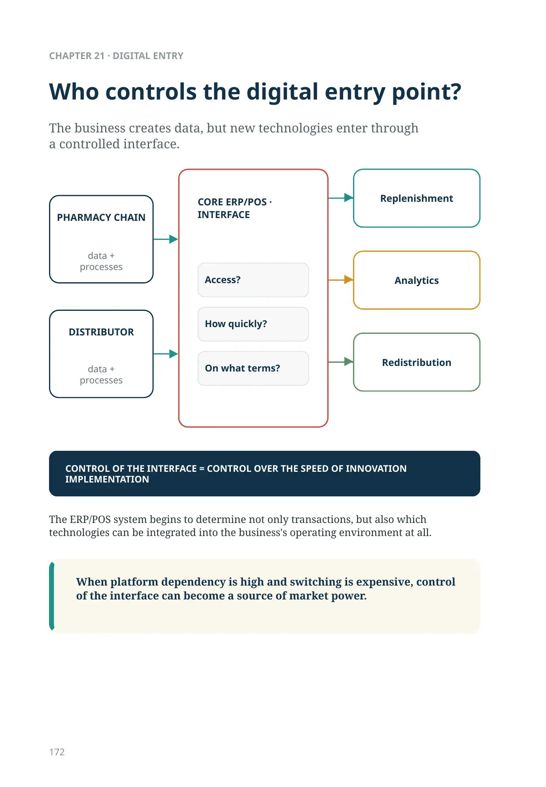
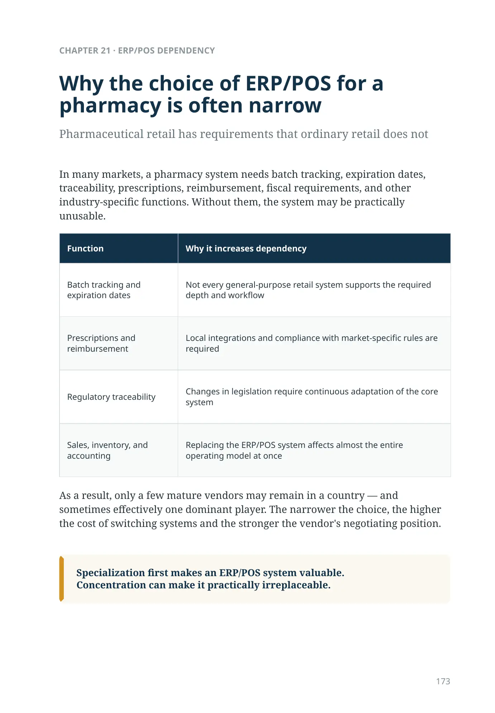
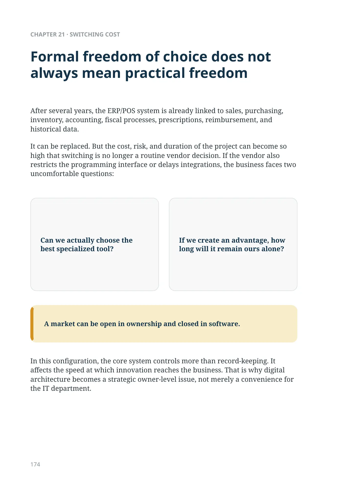
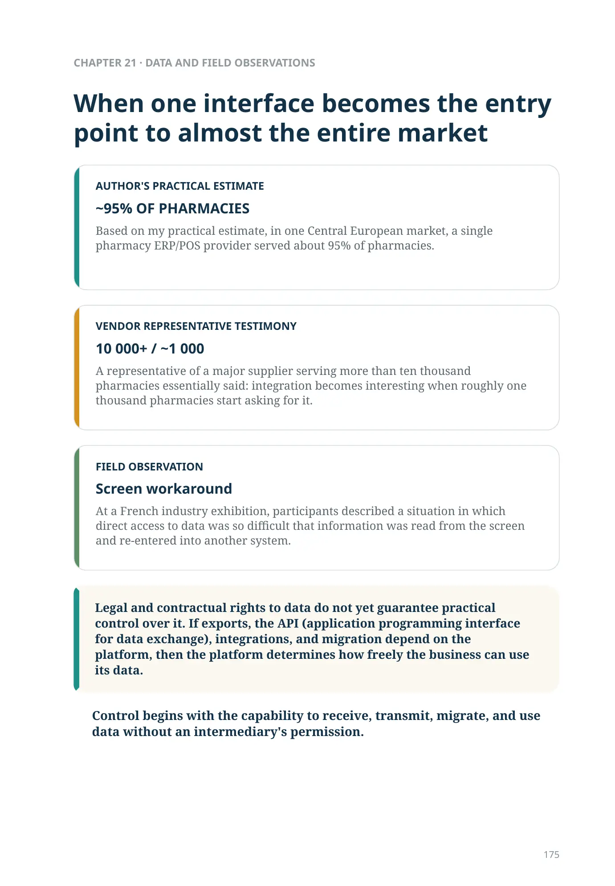
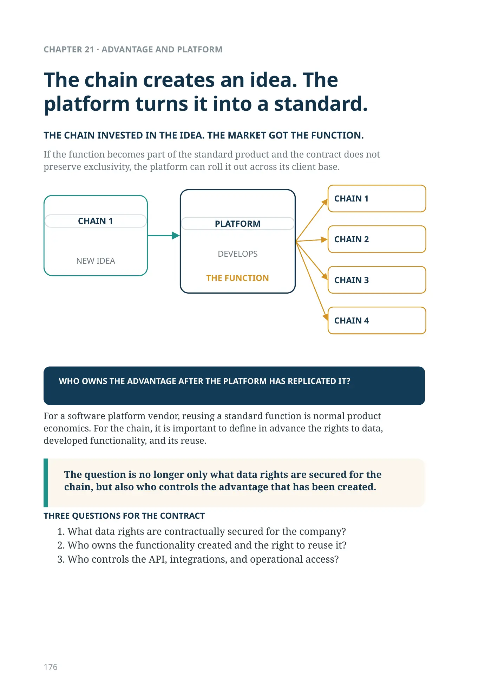
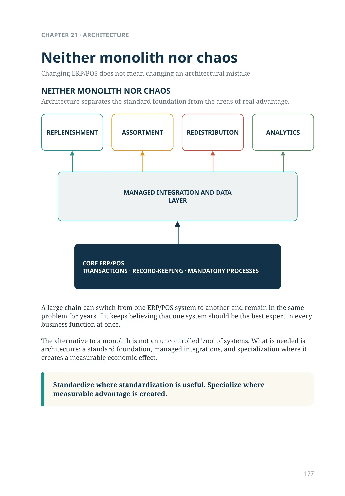
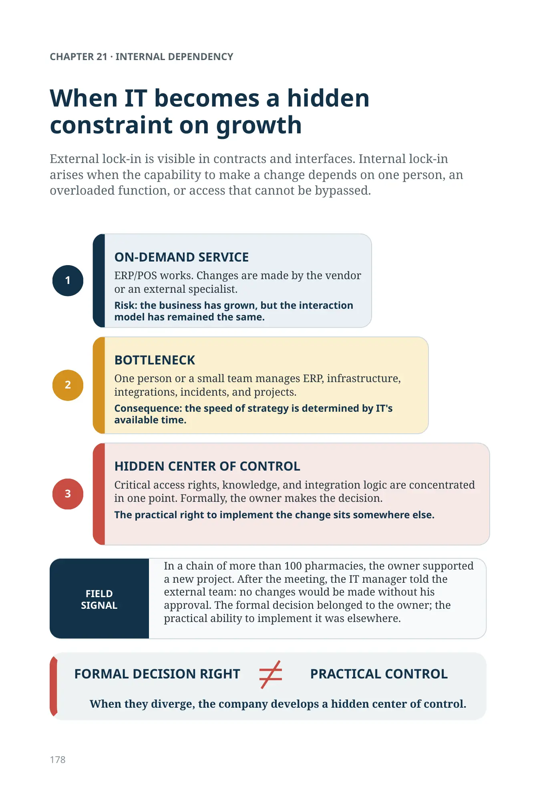
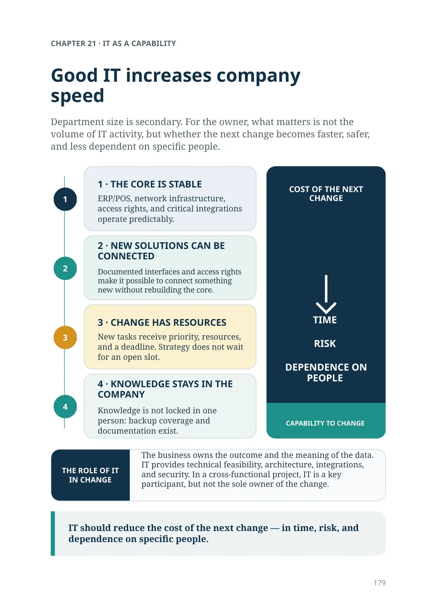
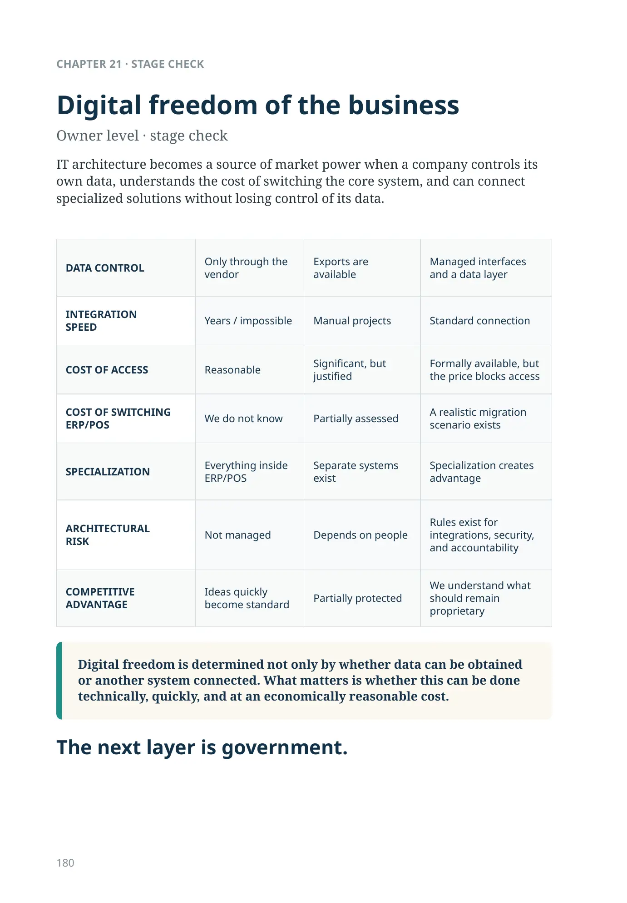
Who controls the digital entry point?
Physical automation also depends on digital freedom
Robotic storage becomes part of the system only when it receives correct instructions and returns correct events: inventory, movement, exception, expiration date, order status. This requires managed integrations with ERP/POS, the ordering system, WMS, and other data sources.
If specialized equipment can be connected only through one vendor's closed environment, physical automation creates not only a new capability but also a new technological dependency.
The layer above the chain
Chapter 21 · IT as market infrastructure
We have completed the three main commercial links in the pharmaceutical market: the pharmacy chain, the distributor, and the manufacturer. Now we need to move one level higher. Some forces are not the next link in the chain; they cut across several links at once.
We have completed the chain. Now we look at the forces that define infrastructure and rules for all its links.
The first layer is IT. For a pharmacy chain and a distributor, digital infrastructure determines who sees the data, who can connect a new technology, how quickly the company can implement a specialized solution, and whether an advantage it creates can remain its own advantage. A company can win within the market and still depend on whoever controls the digital entry point into its business.
CHAPTER 21
ERP/POS, vendor dependency, integrations, and specialized technologies.
What legal and contractual rights does the company have to its operational data? The legal regime depends on the type of data and the jurisdiction. But even when such rights exist, another question remains: who controls access in practice?
Who controls the digital entry point?
The ERP/POS system begins to determine not only transactions, but also which technologies can be integrated into the business's operating environment at all.
When platform dependency is high and switching is expensive, control of the interface can become a source of market power.
The business creates data, but new technologies enter through a controlled interface.
data + processes
- Access?
- How quickly?
- On what terms?
- Replenishment
- Analytics
- Redistribution
DISTRIBUTOR — data + processes
CONTROL OF THE INTERFACE = CONTROL OVER THE SPEED OF INNOVATION IMPLEMENTATION
Why the choice of ERP/POS for a pharmacy is often narrow
Pharmaceutical retail has requirements that ordinary retail does not
In many markets, a pharmacy system needs batch tracking, expiration dates, traceability, prescriptions, reimbursement, fiscal requirements, and other industry-specific functions. Without them, the system may be practically unusable.
| Function | Why it increases dependency |
|---|---|
| Batch tracking and expiration dates | Not every general-purpose retail system supports the required depth and workflow |
| Prescriptions and reimbursement | Local integrations and compliance with market-specific rules are required |
| Regulatory traceability | Changes in legislation require continuous adaptation of the core system |
| Sales, inventory, and accounting | Replacing the ERP/POS system affects almost the entire operating model at once |
As a result, only a few mature vendors may remain in a country — and sometimes effectively one dominant player. The narrower the choice, the higher the cost of switching systems and the stronger the vendor's negotiating position.
Specialization first makes an ERP/POS system valuable. Concentration can make it practically irreplaceable.
Formal freedom of choice does not always mean practical freedom
After several years, the ERP/POS system is already linked to sales, purchasing, inventory, accounting, fiscal processes, prescriptions, reimbursement, and historical data.
It can be replaced. But the cost, risk, and duration of the project can become so high that switching is no longer a routine vendor decision. If the vendor also restricts the programming interface or delays integrations, the business faces two uncomfortable questions:
Can we actually choose the best specialized tool?
If we create an advantage, how long will it remain ours alone?
A market can be open in ownership and closed in software.
In this configuration, the core system controls more than record-keeping. It affects the speed at which innovation reaches the business. That is why digital architecture becomes a strategic owner-level issue, not merely a convenience for the IT department.
When one interface becomes the entry point to almost the entire market
Legal and contractual rights to data do not yet guarantee practical control over it. If exports, the API (application programming interface for data exchange), integrations, and migration depend on the platform, then the platform determines how freely the business can use its data.
Control begins with the capability to receive, transmit, migrate, and use data without an intermediary's permission.
~95% OF PHARMACIES
Based on my practical estimate, in one Central European market, a single pharmacy ERP/POS provider served about 95% of pharmacies.
10 000+ / ~1 000
A representative of a major supplier serving more than ten thousand pharmacies essentially said: integration becomes interesting when roughly one thousand pharmacies start asking for it.
Screen workaround
At a French industry exhibition, participants described a situation in which direct access to data was so difficult that information was read from the screen and re-entered into another system.
The chain creates an idea. The platform turns it into a standard.
For a software platform vendor, reusing a standard function is normal product economics. For the chain, it is important to define in advance the rights to data, developed functionality, and its reuse.
The question is no longer only what data rights are secured for the chain, but also who controls the advantage that has been created.
- What data rights are contractually secured for the company?
- Who owns the functionality created and the right to reuse it?
- Who controls the API, integrations, and operational access?
THE CHAIN INVESTED IN THE IDEA. THE MARKET GOT THE FUNCTION.
If the function becomes part of the standard product and the contract does not preserve exclusivity, the platform can roll it out across its client base.
WHO OWNS THE ADVANTAGE AFTER THE PLATFORM HAS REPLICATED IT?
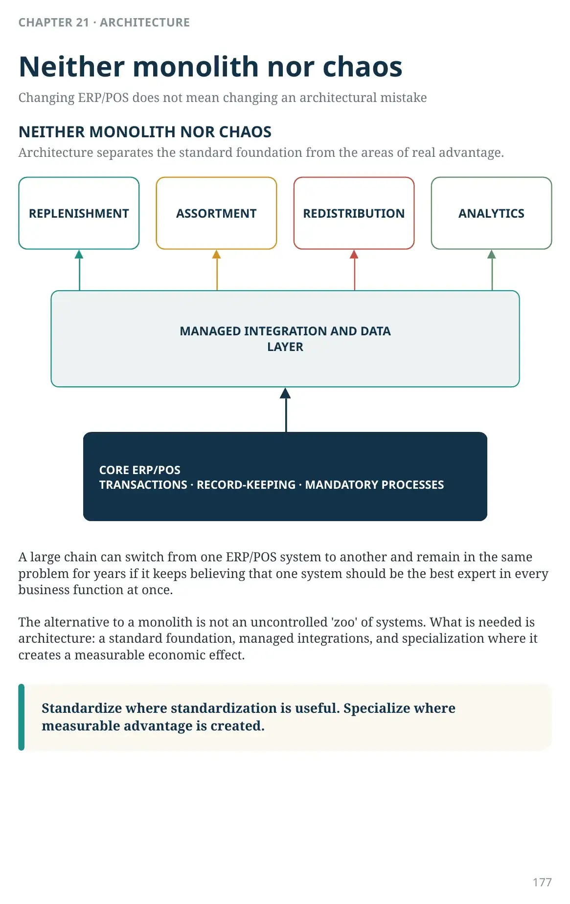
Neither monolith nor chaos
Changing ERP/POS does not mean changing an architectural mistake
Architecture separates the standard foundation from the areas of real advantage.
A large chain can switch from one ERP/POS system to another and remain in the same problem for years if it keeps believing that one system should be the best expert in every business function at once. The alternative to a monolith is not an uncontrolled 'zoo' of systems. What is needed is architecture: a standard foundation, managed integrations, and specialization where it creates a measurable economic effect.
Standardize where standardization is useful. Specialize where measurable advantage is created.
MANAGED INTEGRATION AND DATA LAYER
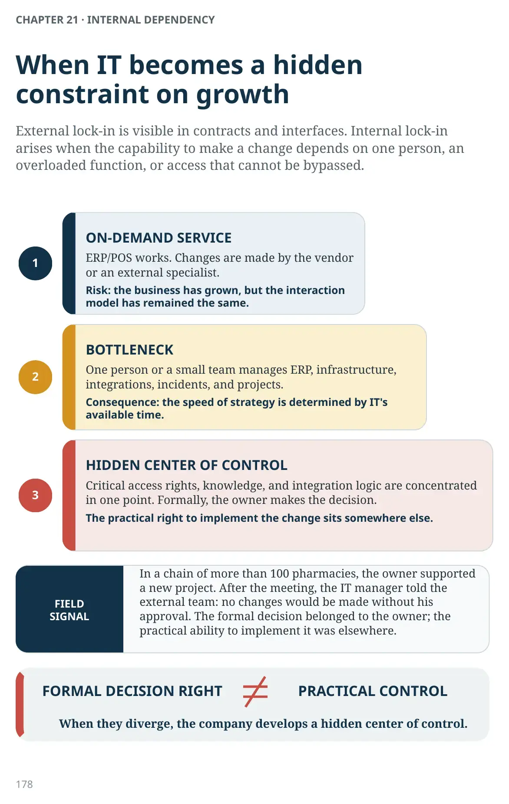
CHAPTER 21 · INTERNAL DEPENDENCY
When IT becomes a hidden constraint on growth
External lock-in is visible in contracts and interfaces. Internal lock-in arises when the capability to make a change depends on one person, an overloaded function, or access that cannot be bypassed.
1 · ON-DEMAND SERVICE
ERP/POS works. Changes are made by the vendor or an external specialist.
Risk: the business has grown, but the interaction model has remained the same.
2 · BOTTLENECK
One person or a small team manages ERP, infrastructure, integrations, incidents, and projects.
Consequence: the speed of strategy is determined by IT's available time.
3 · HIDDEN CENTER OF CONTROL
Critical access rights, knowledge, and integration logic are concentrated in one point. Formally, the owner makes the decision.
The practical right to implement the change sits somewhere else.
FORMAL DECISION RIGHT ≠ PRACTICAL CONTROL
When they diverge, the company develops a hidden center of control.
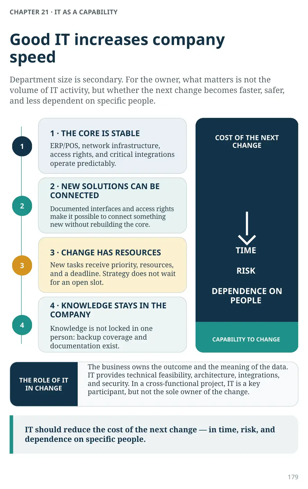
CHAPTER 21 · IT AS A CAPABILITY
Good IT increases company speed
Department size is secondary. For the owner, what matters is not the volume of IT activity, but whether the next change becomes faster, safer, and less dependent on specific people.
1 · THE CORE IS STABLE
ERP/POS, network infrastructure, access rights, and critical integrations operate predictably.
2 · NEW SOLUTIONS CAN BE CONNECTED
Documented interfaces and access rights make it possible to connect something new without rebuilding the core.
3 · CHANGE HAS RESOURCES
New tasks receive priority, resources, and a deadline. Strategy does not wait for an open slot.
4 · KNOWLEDGE STAYS IN THE COMPANY
Knowledge is not locked in one person: backup coverage and documentation exist.
IT should reduce the cost of the next change — in time, risk, and dependence on specific people.
Digital freedom of the business
Owner level · stage check
IT architecture becomes a source of market power when a company controls its own data, understands the cost of switching the core system, and can connect specialized solutions without losing control of its data.
| DATA CONTROL | Only through the vendor | Exports are available | Managed interfaces and a data layer |
|---|---|---|---|
| INTEGRATION SPEED |
Years / impossible | Manual projects | Standard connection |
| COST OF ACCESS | Reasonable | Significant, but justified | Formally available, but the price blocks access |
| COST OF SWITCHING ERP/POS | We do not know | Partially assessed | A realistic migration scenario exists |
| SPECIALIZATION | Everything inside ERP/POS | Separate systems exist | Specialization creates advantage |
| ARCHITECTURAL RISK |
Not managed | Depends on people | Rules exist for integrations, security, and accountability |
| COMPETITIVE ADVANTAGE | Ideas quickly become standard | Partially protected | We understand what should remain proprietary |
Digital freedom is determined not only by whether data can be obtained or another system connected. What matters is whether this can be done technically, quickly, and at an economically reasonable cost.